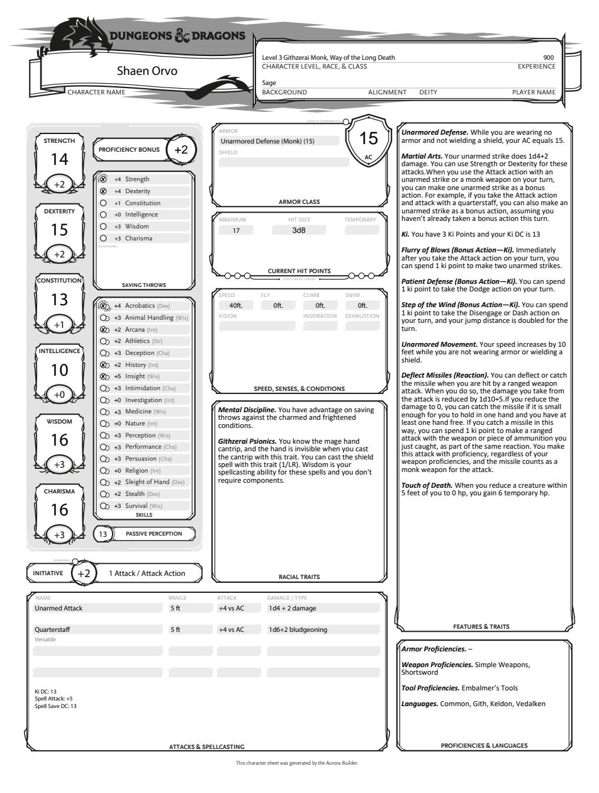
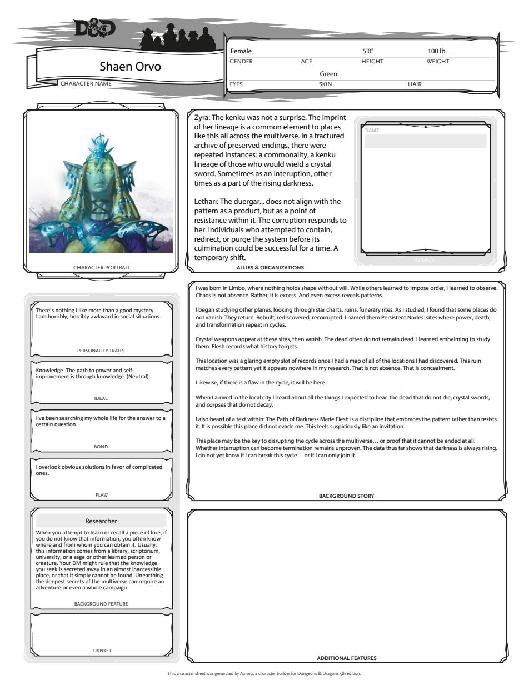
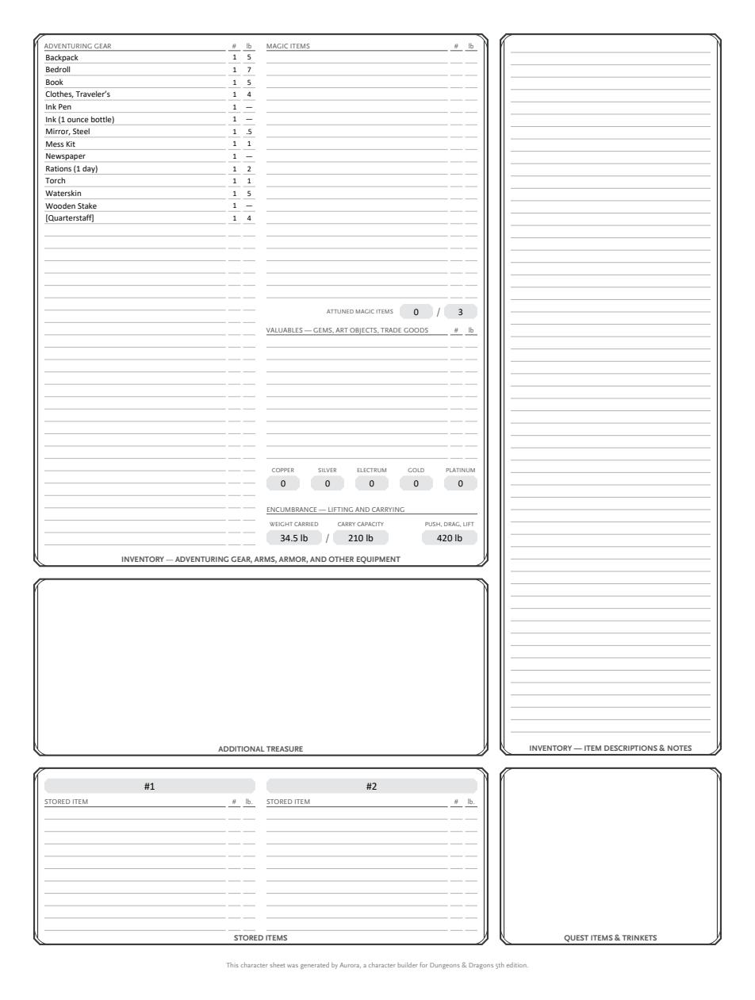
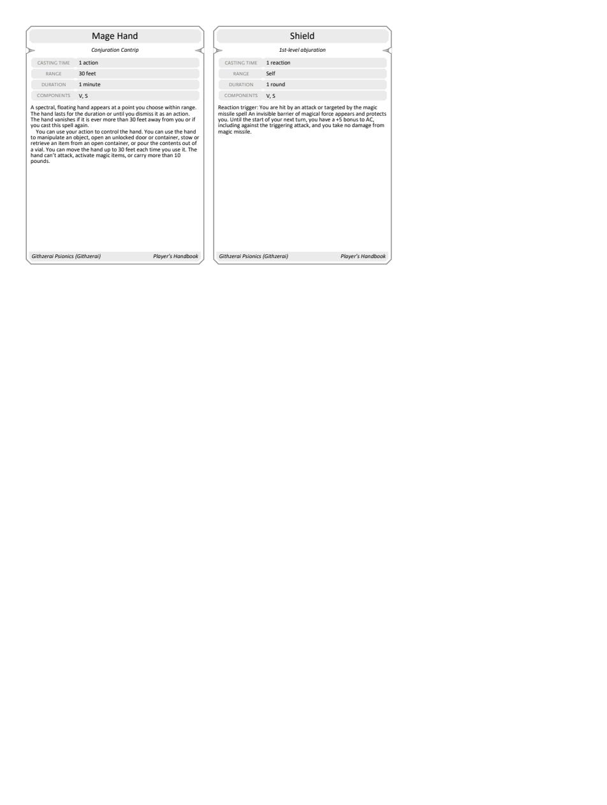
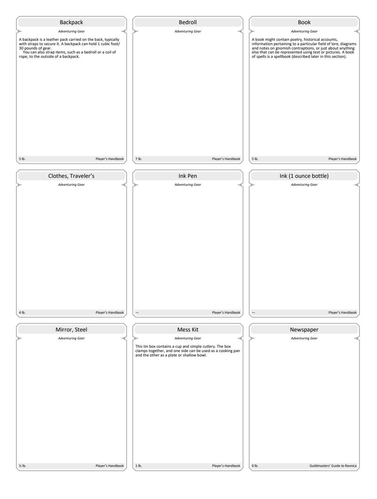
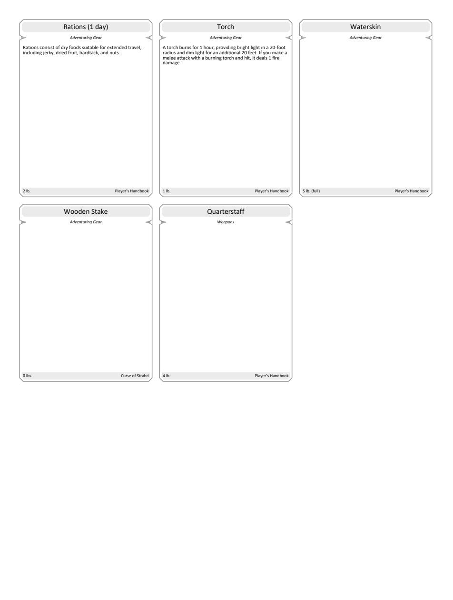

Hook: Researching “Persistent Nodes” — sites where power, death, and transformation cycle.
Connections: Believes this ruin was deliberately concealed from her records; suspects the Path of Darkness Made Flesh may be an invitation aimed at her.
Connections: Believes this ruin was deliberately concealed from her records; suspects the Path of Darkness Made Flesh may be an invitation aimed at her.





